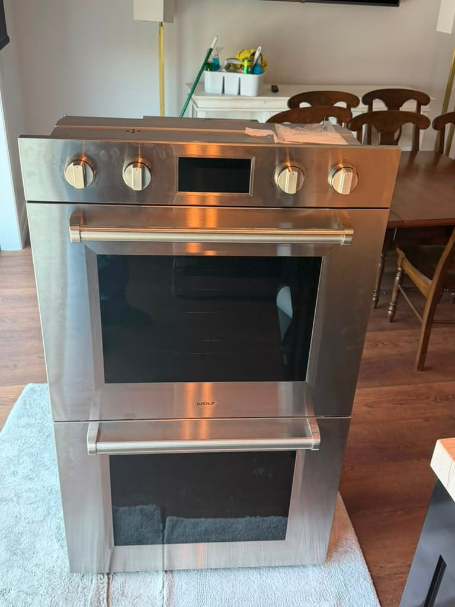
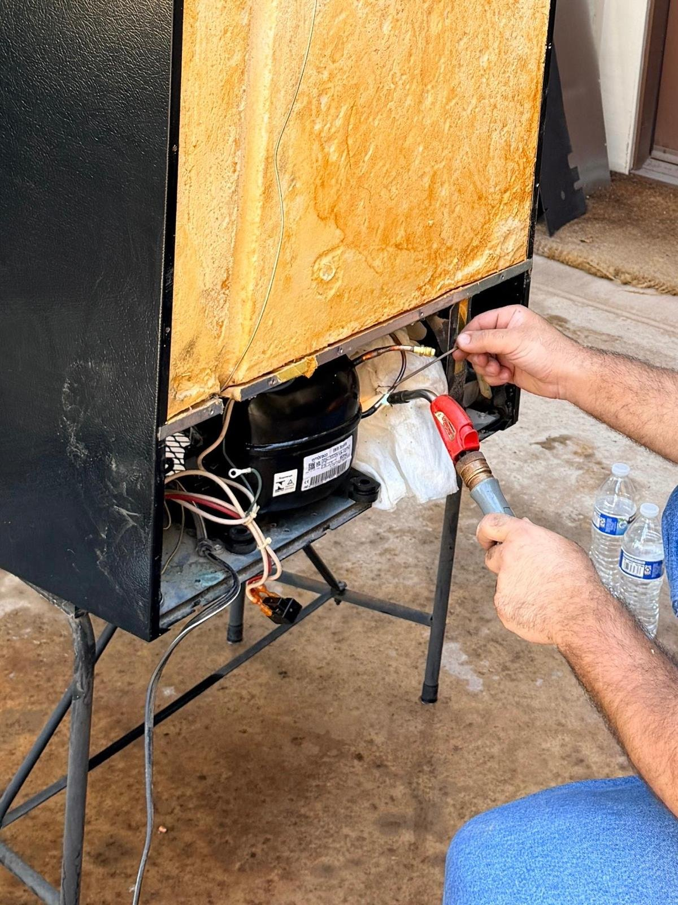

Wolf · Double Wall Oven · Newport Beach, CA
Sub-Zero, Viking, Wolf, Miele, Thermador, Dacor, DCS, and Bosch premium lines, from the Flats to Trousdale Estates. Premium brands only. Our Los Angeles technician can often be out the same day.
5.0 · 160 Google reviewsMon–Sat, 8am–7pm. Two-hour arrival window. The technician calls before arriving.
See neighborhoods and ZIP codes
Family-owned since 2017 · Licensed, bonded & insured
Wolf and Viking jobs our technicians finished on the kinds of appliances Beverly Hills kitchens are built around. Every photo is our own work, labeled with the city it was actually taken in. Beverly Hills is a newer market for us, and local jobs will appear here as we complete them.

Wolf · Double Wall Oven · Newport Beach, CA

Viking · Wine Cooler · Costa Mesa, CA

Viking · Sealed System · Costa Mesa, CA
Wolf · Range · Newport Beach, CA
These are the eight brands we take in Beverly Hills: Sub-Zero, Viking, Wolf, Miele, Thermador, Dacor, DCS, and Bosch premium built-in lines. Choose a brand below to see the faults we see most often on that brand, the parts involved, and how the repair usually goes.
Beverly Hills is premium-brand only. If your appliance is one of these eight, the diagnostic is a flat $99 credited toward the repair, and same-day is often open. With Bosch we take the premium built-in lines, Benchmark included, so if you're not sure which Bosch you have, read us the model number and we'll check it with you. If it's a Whirlpool, LG, or Samsung, we'll tell you on the phone rather than after a visit.
Independent repair service. Not affiliated with or endorsed by these manufacturers; brand names and logos are trademarks of their owners.
We service these brands and make no claim of factory authorization. If your appliance is still under manufacturer warranty, call the brand first, because authorized warranty work should cost you nothing.
What we work on in Beverly Hills kitchens. Open any one for the brands covered, the faults we see most often, and what the repair typically costs.
The diagnostic fee in Beverly Hills is a flat $99, the same rate we charge across Orange County and the rest of Los Angeles County, credited toward your repair if you proceed. It does not change with the brand or the neighborhood. Most premium-brand repairs land between $250 and $900. Viking igniter and burner work usually runs $200 to $600, while sealed-system refrigeration work on a Sub-Zero built-in runs $1,200 to $2,500. Seniors 60+ and repeat customers get 20% off labor.
Estimates vary by brand, part availability, and diagnosis. Final quote is provided before repair. Full pricing guide
Three ZIP codes carry residential delivery in Beverly Hills: 90210, 90211, and 90212. The other two you may see, 90209 and 90213, are post-office box designations rather than places anyone lives. What changes from one part of town to the next is not the appliance so much as the approach: a flat street south of Sunset and a gated canyon address off Mulholland are very different drives, and we schedule them differently.
South of Sunset, north of Santa Monica Blvd. The grid of flat residential streets between Sunset Boulevard and Santa Monica Boulevard. Large lots, wide driveways, and the easiest access of anywhere on this list, which usually means the tightest appointment windows we can offer. Kitchens here run heavily to full Sub-Zero and Wolf suites installed as one matched set.
Northern hillside. A hillside neighborhood developed through the 1950s and 60s on the old Doheny Ranch land, mostly single-story mid-century houses on terraced lots. Narrow streets and steep driveways mean a built-in coming out of a wall needs a plan for where it goes next, so we allow extra time on the books for Trousdale calls.
Santa Monica Blvd, Wilshire Blvd, Crescent Dr. The commercial triangle and the residential blocks around it, including condominium and apartment buildings along Wilshire. Building addresses come with their own logistics: loading docks, freight elevators, and a certificate of insurance on file with the HOA. Tell us the building at booking and we handle it ahead of the visit.
The Wilshire corridor out toward the Los Angeles Country Club, and the southeast side anchored by La Cienega Park. Smaller lots and a higher share of duplexes and condominiums, where a panel-ready dishwasher or an undercounter wine unit in a compact kitchen is the more common call.
North of the city limits. The stretch running north from a few blocks above Sunset up to Mulholland Drive carries a Beverly Hills mailing address but sits inside the City of Los Angeles. It is usually called Beverly Hills Post Office. Gated communities and canyon roads make this the slowest approach in the area, so a cross street at booking is worth more here than anywhere else.
If your address is nearby but not one of the three Beverly Hills ZIP codes, say so when you call. Our general all-brand Los Angeles County service covers a different set of cities at the same $99 diagnostic, including Long Beach and Pico Rivera. We would rather point you to the right one than send a premium-brand technician to a Whirlpool. See every city we serve →
When the refrigeration, the range, and the wine storage all went in during the same remodel, they tend to reach the end of their service life around the same time too. These are the calls we take most often on a full suite.
A high-end Beverly Hills kitchen is rarely assembled one appliance at a time. It goes in during a remodel, as a package, usually from one or two manufacturers, and it gets installed by the same crew in the same week. That is good for the room and inconvenient a decade later, because a matched suite ages on a matched schedule. The compressor in the refrigeration column and the compressor in the undercounter wine unit have run roughly the same hours. The control boards are the same generation. When one thing goes, the odds that a second follows within the year are higher than most homeowners expect.
That changes how a first visit should be spent. If we are already on site for a warm fresh-food column, it costs almost nothing to pull the grille on the wine unit, read the temperatures in both zones, and check whether the condenser is loaded with the same decade of dust. Finding a second problem early is not upselling, it is the difference between one appointment and three, and on a full suite the second appointment is the expensive one.
The other thing that shapes a Beverly Hills call is the room itself. Refrigeration columns sit flush in a cabinet run with a custom panel and hardware attached to the door, on stone or wide-plank floors, sometimes with an integrated freezer beside them and no clearance to speak of. Getting a unit out and back in without leaving a mark on the millwork is a real part of the job rather than an afterthought, and it is why we put more time on the books for these calls than for an Orange County service visit. For the wider premium service across all four cities, see our luxury appliance repair page for Los Angeles.
Universal Appliances Repair Group Inc. provides luxury appliance repair in Beverly Hills, CA, across ZIP codes 90210, 90211, and 90212, including the Flats, Trousdale Estates, the Golden Triangle, West Gateway, and the hillside area north of Sunset Boulevard. We repair built-in refrigeration columns, professional ranges and rangetops, wall ovens, panel-ready dishwashers, undercounter wine storage, and freezers from premium brands only.
Our Los Angeles technician offers same-day service when that schedule is open, otherwise usually within a day or two. We also serve nearby Santa Monica, Manhattan Beach, and Pasadena. Call (949) 629-5365 or book online.
Still have a question? Call (949) 629-5365.
Sub-Zero, Viking, Wolf, Miele, Thermador, Dacor, DCS, and Bosch premium lines across 90210, 90211, and 90212. Same-day when our Los Angeles technician has an opening. 90-day parts / 30-day labor warranty on every job.